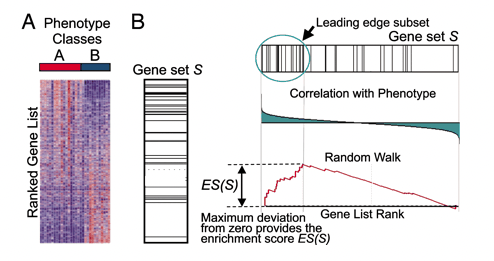
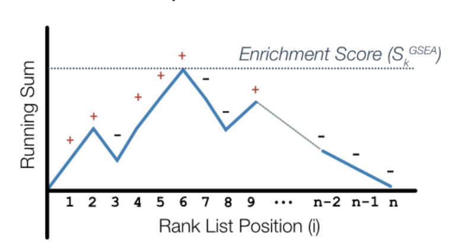
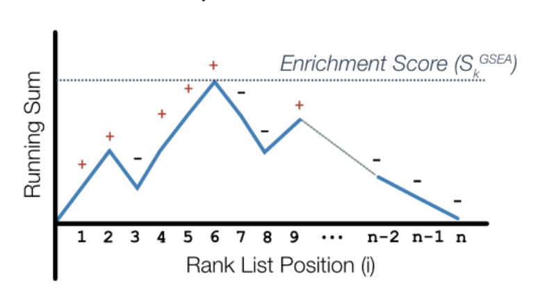

2. Gene set enrichment analysis(GSEA)
GSEA is a method designed to assess whether a predefined set of genes shows significant distribution patterns within a gene list ranked by its association with a phenotype. Rather than focusing solely on individual genes, it evaluates the collective prominence of a gene set at the top or bottom of the ranked list, inferring the set’s overall contribution to the phenotype.
After conducting differential gene expression analysis and obtaining logFC values for each gene, these logFC values offer a ranking based on expression differences. By employing GSEA, you can determine if a predefined gene set, such as those from a specific biological process or pathway, is significantly enriched within your ranked list of differentially expressed genes. This assists in discerning functional and pathway differences between the two conditions.
Why all genes? The hypothesis of FCS(Functional class scoring) methods is that although large changes in individual genes can have significant effects on pathways (and will be detected via ORA methods), weaker but coordinated changes in sets of functionally related genes (i.e., pathways) can also have significant effects. Thus, rather than setting an arbitrary threshold to identify ‘significant genes’, all genes are considered in the analysis, regardless of whether they are deemed differentially expressed based on arbitrary thresholds. All these genes are compared and enriched against predefined GSEA gene sets (similar to pathways, GO, which represent gene-function associations) to determine their contributions to phenotypes (functions). Hence, from the perspective of gene set enrichment, GSEA is not limited to differentially expressed genes and is theoretically more adept at identifying subtle impacts on biological pathways/functions, even when gene fold-changes are minor.
GSEA rationale
a significance analysis of function and expression. Methods that fall under the SAFE framework use a four-step approach to map gene lists onto pathways - Calculate a local (gene-level) statistic - Calculate a global (gene set or pathway-level) statistic - Determine significance of the global statistic - Adjust for multiple testing

The Leading-Edge Subset: Gene sets can be defined by using a variety of methods, but not all of the members of a gene set will typically participate in a biological process. Often it is useful to extract the core members of high scoring gene sets that contribute to the ES. We define the leading-edge subset to be those genes in the gene set S that appear in the ranked list L at, or before, the point where the running sum reaches its maximum deviation from zero (Fig. 1B). The leading-edge subset can be interpreted as the core of a gene set that accounts for the enrichment signal.
- Step 1: Calculation of enrichment score:
An enrichment score for a particular gene set is calculated by walking down the list of log2 fold changes and increasing the running-sum statistic every time a gene in the gene set is encountered and decreasing it when genes are not part of the gene set. The size of the increase/decrease is determined by magnitude of the log2 fold change. Larger (positive or negative) log2 fold changes will result in larger increases or decreases. The final enrichment score is where the running-sum statistic is the largest deviation from zero.
 

- Step 2: Estimation of significance:
The significance of the enrichment score is determined using permutation testing, which performs rearrangements of the data points to determine the likelihood of generating an enrichment score as large as the enrichment score calculated from the observed data. Essentially, for this step, the first permutation would reorder the log2 fold changes and randomly assign them to different genes, reorder the gene ranks based on these new log2 fold changes, and recalculate the enrichment score. The second permutation would reorder the log2 fold changes again and recalculate the enrichment score again, and this would continue for the total number of permutations run. Therefore, the number of permutations run will increase the confidence in the signficance estimates.

- Step 3: Adjust for multiple test correction
After all gene sets are tested, the enrichment scores are normalized for the size of the gene set, then the p-values are corrected for multiple testing. The GSEA output will yield the core genes in the gene sets that most highly contribute to the enrichment score. The genes output are generally the genes at or before the running sum reaches its maximum value (eg. the most influential genes driving the differences between conditions for that gene set).
The predefined gene sets originate from the MSigDB database (https://www.gsea-msigdb.org/gsea/msigdb/index.jsp). These sets predominantly consist of functional genes. If one only has non-functional genes (e.g., miRNA, lncRNA, circRNA), GSEA analysis might not be feasible due to the absence of appropriate gene sets.